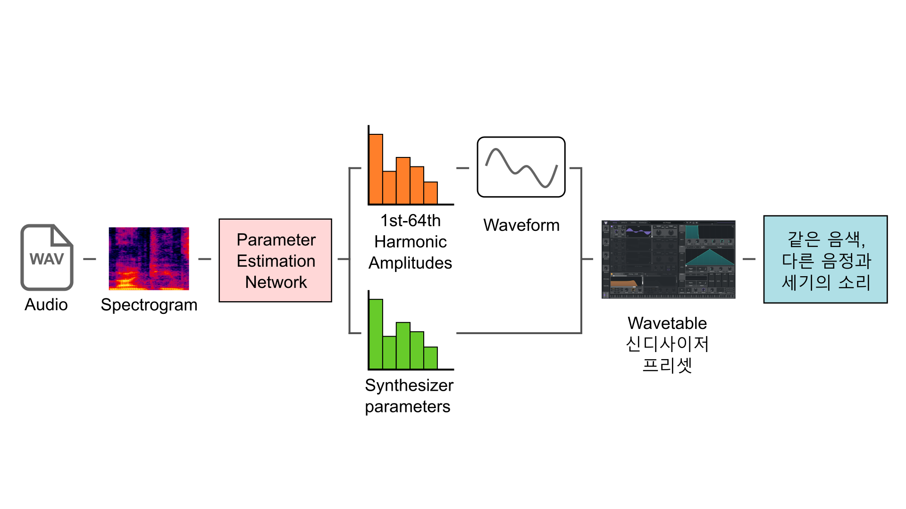

Automatic synthesizer programming is a technology that re-implements synthesized or recorded sounds through synthesizers.
Until now, research has only been conducted on re-implementation through parameter manipulation in subtractive and fm synthesizers, but I have newly studied parameter manipulation in wavetable synthesizers.
In addition to the basic subtractive synthesizers amp envelope and filter operation parameters, the wavetable synthesizer can customize waveforms in addition to sine, square, and sawtooth waves, and is a widely used sound production tool because it can create a very wide range of sounds.
In this study, I created a model to predict the custom waveform shape from the amplitude of the harmonics constituting the waveform in addition to the parameter prediction of the subtractive synthesizer.
Since this model predicts the size of each of the 64 harmonics that are multiples of the basic frequency, it uses a spectrogram in which the frequency is displayed linearly, and sets the magnitudes of each predicted harmonic as the amplitude of the phase 0 sine wave of the corresponding frequency and additive synthesizes them to create a waveform.
Sounds made of 14 synthesizer parameters and 64 randomly designated harmonics between 0 and 1 was used as training data, so that correct predictions can be made even in special cases, such as sounds with a size of 0.5.
| Sounds from DX7(FM Synthesizer) | ||
|---|---|---|
| Target | Predicted | |
| Strings | ||
| Piano | ||
| Clav | ||
| Brass | ||